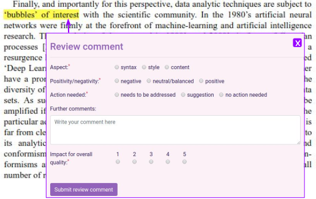
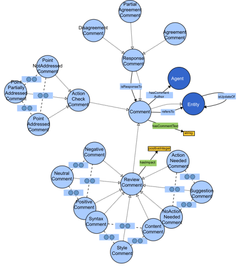
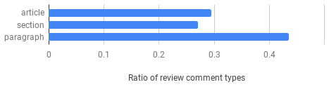
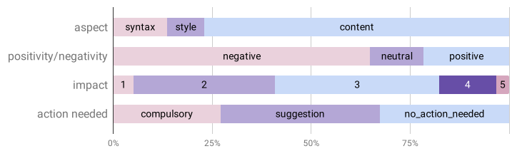

Peer Reviewing Revisited: Assessing Research with Interlinked Semantic Comments
Linkflows Project Updates
18th September 2019
These slides: https://tinyurl.com/Linkflows-18-September-2019
K-CAP'19 research article track
A model of the processes of fine-grained reviews

Research question
Can an approach for scientific publishing based on a fine-grained semantic model help to make reviewing better structured and more accurate?Reviews can be made more structured and precise
Can reviewing be better automatically organized by writing structured fine-grained reviews?
- Aspects: the main aspect that the review comment mentions about the text snippet
- Positivity/Negativity: the point raised in the review comment by the reviewer about the text snippet
- Action needed: the action that needs to be taken by the author(s) of the text snippet according to the reviewer
- Overall impact on quality: the impact of the point raised in the review comment on the overall quality of the article according to the reviewer
Linkflows model for reviewing
Selected datasets
- Recent publications with open peer-reviews
- Journals and conferences in the Computer Science field
- Articles and reviews selected randomly
| Data Science Journal 2017-2018 | Semantic Web Journal 2018 | PeerJ CS Journal 2018 | Openreview.net 2018 | ||||||
|---|---|---|---|---|---|---|---|---|---|
| ISWC-DeSemWeb | ISMIR-WoRMS | ||||||||
| Total | Selected | Total | Selected | Total | Selected | Total | Selected | Total | Selected |
| 13 | 7 | 38 | 7 | 26 | 7 | 10 | 7 | 11 | 7 |
What part of an article does a review comment target?
What are the results of the model expert annotations?
Next steps: implementation of Linkflows model for reviewing (1)
- Continue the research proposed in the K-CAP article
- Extend the model to a more complete set of interactions and processes of the scientific publishing workflow
- Novelty: scientific publishing at a finer-grained level that uses a decentralized network as a publication means with semantic Web-like links
Next steps: implementation of Linkflows model for reviewing (2)
- Connect nanopublications to model
- Extend the model: refersTo, isResponseTo, isUpdateOf, hasCommentAuthor, hasCommentText
- Implement interfaces: evaluation-driven interfaces!
Perform evaluation for different aspects
- User study: let users use our system and rate its usefulness
- Competency questions: what information would be interesting for editors/authors when the Linkflows model is used
- Editors study: let editors rate the usefulness of the system
Competency questions: your input is needed!
- How many comments were positive/negative per review?
- How many negative review comments had an impact higher than 3?
- Which reviewer focused more on content/style/syntax?
- Comparing papers: which of the papers was more controversial?
- Which part is most (positively/negatively) commented?
- How many high impact comments that needed to be addressed were not addressed?
- What are important points that need fixing